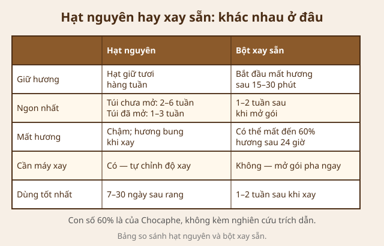

Cà phê nguyên hạt hay xay sẵn: mua và dùng sao cho đúng
Tác giả: Nguyễn Trung Đức
Sáng nào đó hết cà phê, bạn ra cửa hàng và thấy hai dãy túi nằm cạnh nhau: một bên hạt nguyên còn nguyên hình, một bên bột đã xay sẵn, ghi rõ "dùng cho phin" hay "dùng cho máy espresso". Túi bột rẻ hơn lúc trả tiền, lại pha được ngay khi về tới nhà. Túi hạt thì đòi thêm một cái máy xay, thêm vài phút mỗi sáng. Câu hỏi nhiều người đặt ra là loại nào ngon hơn. Nhưng đó chưa phải câu hỏi đúng. Câu hỏi đúng là: mùi thơm của cà phê còn ở lại với bạn được bao lâu sau khi mua — và bạn có kiểm soát được quãng thời gian đó không. Bài này trả lời bằng cách đo thời gian mất hương của từng dạng, xem máy xay làm được gì cho ly của bạn, rồi mới tính tới tiền.
Mùi thơm mất đi nhanh tới mức nào
Theo Chocaphe, hạt cà phê sau khi rang chứa hơn 800 hợp chất tạo mùi. Khi hạt còn nguyên vẹn, các hợp chất đó nằm yên bên trong. Nghiền hạt ra là mở toang cửa cho không khí lọt vào: bề mặt bột phơi ra ngoài tăng lên rất nhiều so với lúc hạt còn nguyên, oxy tiếp cận được các chất thơm dễ bay hơi như aldehydes, ketones và esters — chính là những chất tạo nên mùi ngọt và mùi trái cây trong ly.
Chocaphe đưa ra một con số gây chú ý: bột xay xong để 24 giờ có thể mất tới 60% hương gốc. Bài của họ không trích dẫn nghiên cứu nào cho con số này, nên hãy đọc nó như một lời cảnh báo về tốc độ mất hương, không phải một phép đo chính xác cho mọi loại cà phê. Dù con số tuyệt đối có thể tranh cãi, hướng của nó thì các nguồn khác đều đồng ý: bột bắt đầu nhạt đi chỉ sau 15–30 phút kể từ lúc xay, theo Chocaphe, còn Craft Coffee Guru diễn đạt gọn hơn — bột mất mùi trong vài phút đến vài giờ, trong khi hạt nguyên giữ được hàng tuần.
Như vậy khác biệt giữa hạt và bột không nằm ở "ngon hơn" theo nghĩa tuyệt đối, mà nằm ở thời gian bạn được hưởng mùi thơm. Hạt cho bạn nhiều thời gian hơn: xay lúc nào thì mùi bung ra lúc đó. Bột cho bạn ít thời gian hơn: mùi bắt đầu đi ngay từ lúc xay, để càng lâu càng nhạt.
Bảng thời gian ngon nhất của từng dạng
Ba nguồn Postmart, Chocaphe và TTD Coffee ghi mốc thời gian hơi khác nhau, nhưng đều xếp theo cùng một thứ tự: hạt chưa mở túi giữ lâu nhất, bột giữ ngắn nhất. Bảng dưới đây gom các mốc đó lại; mỗi hàng ghi thêm dấu hiệu để bạn tự nhận biết khi cà phê đã qua thời gian ngon nhất.
| Dạng mua | Ngon nhất sau ngày rang | Vẫn dùng được | Dấu hiệu đã quá thời gian ngon |
|---|---|---|---|
| Hạt, túi chưa mở | 2–6 tuần; Chocaphe ghi 7–30 ngày | Vài tháng, mùi nhạt dần | Xay ra ít mùi bung, vị phẳng hơn trước |
| Hạt, túi đã mở | 1–3 tuần | Khoảng 1–2 tháng nếu đóng kín | Mùi khi mở túi không còn rõ như lúc đầu |
| Bột đã xay | 1–2 tuần sau khi mở gói | Khoảng 1 tháng, mùi nhạt rõ | Pha ra thơm ít, vị chủ yếu còn đắng và chua |
Theo TTD Coffee, "rang tươi" nghĩa là hạt được rang cách thời điểm dùng không lâu — họ lấy mốc 21 ngày làm chuẩn. Định nghĩa này khớp với các mốc trên: hạt ngon nhất trong vài tuần đầu sau rang, bột ngon nhất trong 1–2 tuần sau khi xay hoặc mở gói.
Cách cất giữ kéo dài hoặc rút ngắn các mốc đó. Túi đựng nên có van một chiều hoặc nắp kín, càng ít không khí thừa bên trong càng tốt. Chỗ để là nơi khô, mát, xa bếp và xa nắng. Tủ lạnh không phải chỗ giữ cà phê: lấy ra lấy vào mỗi ngày làm hơi nước đọng lại, bột ẩm dần và ám mùi đồ ăn trong tủ. Muốn để lâu thì chia cà phê thành từng gói đủ dùng một tuần, cho vào túi kín rồi cấp đông, và đã rã đông thì đừng đông lại lần nữa. Dụng cụ pha cà phê tại nhà và cách bảo quản cà phê hạt, bột đã viết kỹ về cách bảo quản; bài này chỉ nhắc một nguyên tắc mua hàng: dù mua hạt hay bột, bạn cũng nên mua lượng vừa đủ dùng trong thời gian ngon nhất ghi ở bảng trên.

Bảng so sánh hạt nguyên và bột xay sẵn.
Hạt mới rang chưa chắc đã ngon nhất hôm nay
Có một chặng chờ nữa trước khi hạt rang cho ly ngon: khí CO₂ sinh ra trong lúc rang còn nằm trong hạt và thoát ra từ từ. Pha quá sớm, lượng khí còn nhiều có thể làm nước tiếp xúc với bột không đều, khiến chiết xuất thiếu ổn định — TTD Coffee ghi rõ điểm này. Theo Mayrangcafe, hạt rang đậm nên chờ khoảng 2–4 ngày, hạt rang sáng nên chờ khoảng 5–10 ngày mới pha. Craft Coffee Guru cũng ghi cà phê ngon nhất sau vài ngày nghỉ kể từ lúc rang, nhất là với espresso, và sau khoảng một tháng thì mùi vị nhạt đi rõ rệt.
Vì vậy một túi hạt rang hôm qua chưa phải là túi ngon nhất để pha hôm nay. Khi mua, hãy hỏi ngày rang, để hạt nghỉ vài ngày rồi mới pha, và tính thời gian ngon nhất kể từ lúc hạt đã nghỉ đủ, không phải kể từ ngày rang.
Máy xay: thứ quyết định bột của bạn đều hay không
Mua hạt thì bạn cần máy xay, và loại máy xay quyết định bột ra đều hay không — mà bột không đều thì ly khó mà ổn định. Có hai loại chính: máy xay lưỡi nón và máy xay lưỡi dao. Cách chúng làm việc khác nhau hoàn toàn: lưỡi nón nghiền hạt giữa hai bề mặt có răng, khoảng cách giữa hai bề mặt do núm vặn đặt, và mọi hạt đều phải chui qua cùng một khe hẹp mới rơi xuống; lưỡi dao thì quay một lưỡi cắt trong cối, hạt bị chém nhỏ dần theo thời gian bạn giữ nút, không có khe nào để sàng lọc.
Để thấy khác biệt này lớn tới mức nào, BrewMark trích dẫn một thử nghiệm của America's Test Kitchen: họ sàng bột đã xay để đếm tỉ lệ hạt cỡ vừa. Bảy mẫu máy lưỡi dao chỉ cho ra 27–44% hạt cỡ vừa; máy lưỡi nón cho ra trung bình trên 60%, mẫu tốt nhất đạt 82%. Nhìn chung, bột từ máy lưỡi dao mịn hơn hẳn bột từ máy lưỡi nón. Bột không đều đẩy ly đi hai hướng ngược nhau cùng lúc: phần bột quá mịn chiết quá đà, cho vị gắt; phần hạt quá to chiết chưa tới, cho vị nhạt — một mẻ xay lưỡi dao trộn cả hai loại nên cùng một ly có thể vừa gắt vừa nhạt.
Khác biệt này quan trọng hay không còn tùy cách pha. Với máy pha nhỏ giọt, người nếm của America's Test Kitchen thấy gần như không có khác biệt giữa bột xay bằng máy lưỡi dao tốt và bột xay bằng máy lưỡi nón. Với pour over và espresso, khác biệt rõ ràng, và khả năng chỉnh từng nấc nhỏ còn quan trọng hơn cả độ đều. Espresso cần độ xay mịn và chỉnh từng bước nhỏ, mà máy lưỡi dao không có nấc chỉnh nào, nên không phải lựa chọn cho espresso. America's Test Kitchen khuyên nên có ít nhất 40 nấc chỉnh nếu pha espresso, và ít nhất 10 nấc cho một máy xay cơ bản.
Lưỡi nón cũng có hai dạng: hình nón và lưỡi phẳng hình đĩa. BrewMark ghi lưỡi phẳng thường cho bột đều hơn một chút, nhưng America's Test Kitchen không thấy khác biệt về vị giữa hai dạng, và tất cả các mẫu máy được họ chọn hàng đầu đều dùng lưỡi nón hình nón. Ở mức giá phổ thông, hình dạng lưỡi nón không nên là yếu tố quyết định khi mua.
Điểm khác nữa là tính lặp lại. Máy lưỡi dao chỉ có một biến số là thời gian — mà thời gian không phải biến số chính xác, vì kích thước hạt và lượng hạt trong cối đều làm thay đổi kết quả. Máy lưỡi nón tách hai việc ra: núm vặn đặt cỡ xay, cân đặt lượng hạt. Tìm được một nấc số cho ra ly ngon, bạn có thể quay lại đúng nấc đó, ghi lại, và chỉ đổi một thứ mỗi khi thử túi hạt mới. Đó mới là điều làm cho việc pha theo công thức trở nên khả thi. Một nghiên cứu mà BrewMark dẫn lại càng cho thấy vì sao thời gian xay không ổn định được: khi xay bằng máy lưỡi dao, lượng chất tan ra và lượng caffeine trong ly đều tăng theo thời gian xay từ 0 tới 42 giây — chỉ vài giây chênh nhau cũng đủ làm ly khác đi.
Nếu vẫn xay bằng máy lưỡi dao, America's Test Kitchen — qua BrewMark — khuyên một cách làm cho kết quả bớt lệch giữa các sáng: mỗi lần xay cùng một khối lượng hạt, giữ máy chạy cùng một khoảng thời gian, và trong lúc xay thì lắc nhẹ để hạt đảo đều, với lượng hạt đủ ngập lưỡi dao hoặc chạm vạch tối thiểu trong cối. Cách này không làm bột đều hơn, nó chỉ giữ cho sai số của bạn lặp lại giống nhau mỗi ngày, thay vì mỗi sáng một kiểu. Máy lưỡi dao vẫn có chỗ dùng: xay gia vị là cách nhanh nhất, nên bạn có thể giữ lại cho gia vị ngay cả sau khi đã mua máy lưỡi nón.
Dùng máy lưỡi nón thì nên ghi lại nấc số cho từng cách pha. Lấy ví dụ máy Baratza Encore: núm vặn chạy từ 1 (rất mịn) đến 40 (rất thô), sách hướng dẫn gợi ý nấc 8 cho espresso, nấc 15 cho V60, nấc 28 cho French press. Những con số này chỉ đúng cho máy đó, không áp được cho máy khác — nhưng nguyên tắc thì giống nhau: mỗi máy có một thang nấc riêng, bạn tìm ra nấc của mình cho từng cách pha rồi ghi lại để lần sau quay lại đúng chỗ.
Một cỡ xay không dùng được cho mọi cách pha
Khi đã có máy xay, bạn cần biết độ xay nào hợp với cách pha của mình. Bảng dưới đây gom độ xay theo cách pha từ Postmart và BrewMark; con số độ xay lấy theo Postmart.
| Cách pha | Gợi ý hạt và mức rang | Độ xay |
|---|---|---|
| Phin | Robusta, hoặc phối trộn Robusta với Arabica, ở mức rang vừa đến đậm | Vừa đến hơi thô |
| Pour over (V60, Chemex) | Arabica rang sáng tới vừa | Vừa, đều hạt |
| Espresso, máy pha | Arabica, hoặc phối trộn có thêm Robusta để lớp crema dày và vị đậm hơn | Mịn |
| Cold brew | Rang vừa, vị ngọt tự nhiên, ít chua; ngâm ngăn mát 12–18 giờ | Thô |
| French press | Postmart không ghi mức rang cho French press — chỉ dùng bột thô | Thô |
Một lưu ý khi đổi độ xay: mức rang làm thay đổi độ cứng của hạt và tốc độ chiết xuất, nên cùng một cỡ xay có thể cho ly khác nhau khi bạn đổi gói cà phê. Mức rang cà phê: rang nhạt, rang vừa, rang đậm — chọn theo cách pha đã viết kỹ về cách chỉnh độ xay theo mức rang; ở đây chỉ cần nhớ nguyên tắc khi mua: giữ nguyên độ xay quen thuộc trong vài lần đầu đổi hạt, rồi mới chỉnh một nấc mỗi lần.
Tính tiền theo ly ngon, không theo giá ghi trên túi
Bột xay sẵn thường rẻ hơn hạt nguyên lúc trả tiền, vì bạn không cần đầu tư máy xay. Nhưng nếu tính theo số ly ngon pha được từ một túi, hạt có thể rẻ hơn về lâu dài: bột để lâu mất hương, và phần bột đã nhạt bạn có thể phải bỏ đi. Bạn nên tính giá theo số ly mình thực sự uống ngon, chứ không chỉ tính giá ghi trên túi.
Với quán cà phê, phép tính này càng rõ. Chocaphe khuyên chủ quán đầu tư máy xay riêng, chọn hạt rang mới và xay đúng lượng cần dùng mỗi lần. Chưa có điều kiện mua máy thì đặt cà phê xay theo mẻ nhỏ, đủ dùng trong 1–2 ngày. Một chiếc máy xay tốt sẽ hoàn vốn rất nhanh nếu quán bán đều. Ở nhà, phép tính tương tự nhưng nhỏ hơn: một máy xay lưỡi nón mua một lần dùng nhiều năm, chia ra mỗi ly chỉ thêm một khoản rất nhỏ, đổi lại bạn không còn phải bỏ bột nhạt.
Bảng chọn nhanh theo hoàn cảnh của bạn
Bảng dưới đây tổng hợp từ các nguồn đã dẫn. Bạn chỉ cần tìm dòng giống hoàn cảnh của mình nhất.
| Hoàn cảnh của bạn | Nên mua | Vì sao |
|---|---|---|
| Pha mỗi sáng, có máy xay, thích thử nhiều loại hạt | Hạt nguyên | Xay tươi giữ hương lâu nhất, tự chỉnh độ xay theo cách pha |
| Pha phin mỗi sáng, không có máy xay, muốn nhanh | Bột xay cho phin, gói nhỏ | Đổ bột ra là pha, không cần chuẩn bị thêm; mua gói nhỏ và dùng hết trong 1–2 tuần |
| Văn phòng đông người, cần pha nhanh cho nhiều người | Bột xay sẵn, hoặc hạt xay theo mẻ | Bột tiện và rẻ lúc đầu; nếu có máy xay thì xay theo mẻ dùng trong 1–2 ngày |
| Mới bắt đầu uống cà phê, chưa khắt khe về hương vị | Bột xay sẵn | Rẻ, tiện, đủ để làm quen với vị cà phê trước khi đầu tư máy xay |
| Pha nhiều cách: phin, pour over, cold brew | Hạt nguyên + máy xay lưỡi nón | Một túi hạt xay được nhiều cỡ khác nhau; bột xay sẵn chỉ hợp với một cách pha |
| Đi du lịch, ở nơi không có máy xay | Bột xay sẵn, gói nhỏ | Nhẹ, gọn, không cần mang máy xay theo |
| Mở quán, cần vị ổn định giữa các ly | Hạt nguyên + máy xay riêng | Xay theo lượng cần, kiểm soát độ xay và thời gian sau rang |
Bột xay sẵn chỉ hợp với đúng cách pha ghi trên gói — bột cho phin không dùng được cho máy espresso và ngược lại, nên hãy chọn đúng loại trước khi mua. Gói bột đã mở thì đậy kín, đặt chỗ khô ráo và dùng trong một hai tuần; gói lớn nên chia nhỏ để phần chưa dùng khỏi mở ra mở vào nhiều lần. Với hạt nguyên, ưu tiên gói có ghi ngày rang: vài tuần đầu sau rang là lúc hương còn đầy, khoảng 7–30 ngày theo Chocaphe. Đựng hạt trong hộp kín, đặt chỗ khô ráo, tránh ánh nắng trực tiếp, và mỗi lần chỉ xay đủ lượng pha hôm đó — hương thơm bay đi theo thời gian dù bạn có cất kỹ tới đâu.
Không có lựa chọn nào đúng cho mọi người, và bạn cũng không cần gắn với một loại mãi mãi. Người có thời gian, có máy xay và sẵn sàng học kỹ thuật xay, pha thì hạt là lựa chọn đáng cân nhắc. Ngược lại, ai bận rộn và chỉ cần một ly nhanh — không có thời gian, không có máy xay — thì cứ dùng bột xay sẵn. Chocaphe gợi ý một cách dùng kết hợp: hạt nguyên dành cho lúc rảnh rỗi muốn pha kỹ — sáng cuối tuần chẳng hạn — còn bột xay sẵn dành cho lúc vội, lúc cần pha nhanh hay mang theo khi đi xa.
Kết luận
Chọn hạt hay bột không phải là chọn đúng hay sai, mà là chọn hợp với hoàn cảnh của bạn. Hạt nguyên giữ hương lâu hơn, cho bạn tự chỉnh độ xay theo cách pha, và thường là lựa chọn hợp nhất nếu bạn có máy xay và pha mỗi sáng. Bột xay sẵn tiện và rẻ lúc đầu, hợp với người bận rộn, văn phòng, hoặc người mới bắt đầu. Dù chọn loại nào, bạn cũng nên mua lượng vừa đủ dùng trong thời gian ngon nhất: hạt trong vài tuần sau ngày rang, bột trong 1–2 tuần sau khi mở gói. Và nếu bạn quyết định mua hạt, hãy đầu tư vào máy xay lưỡi nón trước khi đầu tư vào dụng cụ pha đắt tiền, vì độ đều của bột là thứ quyết định ly của bạn có lặp lại được hay không.
Nguồn tham khảo
- Chocaphe, "Cà phê xay sẵn hay cà phê hạt – Lựa chọn nào dành cho người hiểu cà phê?" — hương bắt đầu bay mất chỉ 15–30 phút sau khi xay; sau 24 giờ, bột xay sẵn có thể mất tới 60% hương gốc (bài viết không trích nghiên cứu); bột nên dùng trong 1–2 tuần sau khi mở gói; hạt ngon nhất trong khoảng 7–30 ngày sau rang; quá trình rang sinh ra hơn 800 hợp chất hương vị; chưa mua được máy xay thì đặt xay theo mẻ nhỏ, đủ dùng trong 1–2 ngày (truy cập 23/11/2026): https://chocaphe.vn/ca-phe-xay-san-hay-ca-phe-hat-lua-chon-nao-danh-cho-nguoi-hieu-ca-phe.n93
- Postmart, "Cà phê nguyên chất: cách nhận biết, chọn mua, bảo quản" — hạt rang túi chưa mở ngon nhất 2–6 tuần sau ngày rang, túi đã mở 1–3 tuần, bột đã xay 1–2 tuần; nên mua hạt nếu có máy xay, mua bột thì chọn gói nhỏ, ngày rang gần, dùng hết trong 1–2 tuần; bảng độ xay theo cách pha: phin vừa đến hơi thô, V60 vừa, espresso mịn, cold brew thô ngâm 12–18 giờ trong ngăn mát; không để cà phê trong ngăn mát tủ lạnh rồi lấy ra mỗi ngày vì hơi nước ngưng tụ làm bột ẩm và hút mùi (truy cập 23/11/2026): http://postmart.com.vn/cam-nang-ca-phe/
- TTD Coffee, "Cà phê rang tươi và cà phê đóng gói sẵn: Khác nhau thế nào, nên chọn loại nào?" — rang tươi nghĩa là rang xong không lâu trước khi dùng, thường trong khoảng 21 ngày; cà phê mới rang cần thời gian xả khí CO₂, pha quá sớm thì chiết xuất thiếu ổn định; bảo quản như nhau thì hạt nguyên giữ hương tốt hơn bột đã xay; van một chiều, bao bì hút chân không hoặc thay khí trơ đều giúp bảo vệ chất lượng (truy cập 23/11/2026): https://ttdcoffee.com/ca-phe-rang-tuoi-va-ca-phe-dong-goi-san/
- BrewMark, "Burr vs Blade Grinder: What Actually Changes in Your Cup" — trích thử nghiệm của America's Test Kitchen: máy xay lưỡi dao cho ra 27–44% hạt cỡ vừa trong bảy mẫu máy, máy xay lưỡi nón cho ra trung bình trên 60% hạt cỡ vừa, mẫu tốt nhất đạt 82%; máy xay lưỡi dao tạo ra nhiều bột mịn hơn máy xay lưỡi nón trung bình; với máy pha nhỏ giọt, người nếm thấy gần như không có khác biệt, với pour over và espresso, khác biệt là rõ ràng; America's Test Kitchen khuyên nên có ít nhất 40 nấc chỉnh nếu pha espresso và ít nhất 10 nấc cho máy xay cơ bản; máy Baratza Encore có núm vặn từ 1 (rất mịn) đến 40 (rất thô), gợi ý nấc 8 cho espresso, nấc 15 cho V60, nấc 28 cho French press (truy cập 23/11/2026): https://brewmark.io/blog/burr-vs-blade-grinder
- Craft Coffee Guru, "How to Read a Coffee Bag Label: Roast Date, Origin, Process and More" — bột cà phê mất hương trong vài phút đến vài giờ, trong khi hạt nguyên giữ tươi hàng tuần; mua hạt nguyên nếu có thể (truy cập 23/11/2026): https://www.craftcoffeeguru.com/coffee-bag-labels/
- Mayrangcafe (BACCO), "Mức rang cà phê light, medium, dark và nhiệt độ hạt" — rang đậm dùng được sau 2–4 ngày; rang sáng chờ 5–10 ngày cho khí CO₂ thoát bớt; pha quá sớm thì bọt sủi mạnh, chiết không đều, vị gắt (truy cập 23/11/2026): https://mayrangcafe.vn/muc-rang-ca-phe-nhiet-do/